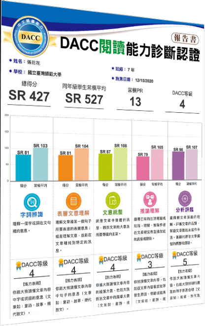

Diagnostic Assessment of Chinese
Competence for Chinese Language Learners
中文閱讀能力適性診斷是第一個可橫跨多個學習階段的中文閱讀測驗。 你可以透過中文閱讀能力診斷快速且精確地定位學生的閱讀能力程度， 並長期追蹤閱讀能力成長的過程。
人工智能，精確定位
藉由AI與題庫的配合，結合現代測驗理論技術。
同時評測整體的閱讀能力以及進行字詞辨識、 表層文意理解、文意統整這幾項向度的能力診斷。
我們透過現代測驗理論技術來計算這些閱讀能力的程度，並以數值呈現精確的能力定位。

高效診斷，快速直觀
以電腦化適性測驗的型式進行診斷，可評測整體和細部的閱讀理解能力，同時與SmartReading數據庫的常模進行同年級的數據對比，讓你總體以及上述的幾個向度的能力更直觀。

DACC CFL中文閱讀能力診斷書
中文閱讀能力診斷評量是新一代結合AI和大數據的電腦化適性測驗。AI根據受測者的初始程度及每一題的作答情形，動態調整挑選出受測時的題型。我們也基於認知發展理論，將受測者的閱讀能力依照字詞辨識、表層文意理解、文意統整、推論統整等3個向度作為分析項目。在檢測之後，電腦運用大數據進行同個等級的常模對照，分析出受測者實際的閱讀能力等級落點於哪個等級，教師可依此進行差異化教學。